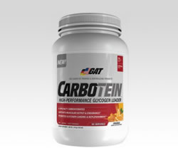

Dream Tan Instant Skin ColorDream Tan es una fabulosa pintura de bronceado instantáneo para lucir espectacular frente a cualquier jurado, contando con diferentes tonalidades según el color de piel. Es sin duda la crema más buscada en el mundo del fisicoculturismo. Esta magnífica crema no puede faltar en una competencia. Sin duda alguna Dream Tan es la mejor pintura de bronceado instantáneo en cualquiera de sus fórmulas. Presentación: 56 gr.Precio: $325 MXN. |
Spyder BottleSpyder Bottle te da la libertad para llevar todo lo necesario para tu día en un solo envase. Donde quiera que vayas, lleva contigo tu Spyder Bottle. Sus tres compartimentos simplifican tu vida, ya que puedes almacenar varias porciones de tus suplementos nutricionales - creatina, proteína, vitaminas, cápsulas, suplementos pre o post-entreno... lo que quieras! Está hecho de plástico BPA y libre de DEHP y es 100% a prueba de fugas. Se puede utilizar todos los días, guárdalo en el congelador, puedes calentar su contenido en el microondas y lavar en el lavavajillas. Está diseñado para la vida real. Presentación: Shaker 500 ml.Precio: $250 MXN. |

Carbotein de GATCarbotein es una avanzada fórmula de carbohidratos para la carga/recarga de glucógeno muscular pre, intra o post entrenamiento. Combina 6 fuentes especiales de hidratos de carbono, aminoácidos de cadena ramificada, electrolitos e intermediarios del ciclo del ácido cítrico para maximizar la entrega de energía. Cuando se bebe antes, durante o después de un entrenamiento de alta intensidad se maximiza el trabajo del sistema muscular al cargar/recargar el combustible muscular (glucógeno) promoviendo la construcción de la masa muscular. Presentación: 3.8 lb.Precio: $495 MXN. |
Amino Tone de Ronnie ColemanLa investigación validó una relación 2:1:1 de BCAA´s (Leucina, Isoleucina, Valina) que proporcionan a tus músculos la energía vital para mantenerse activos mientras que la mezcla de electrolitos hidrata las células del músculo para una actuación dominante en el gimnasio. El sabor refrescante de Amino-Tone va a mantener un entorno de construcción muscular e hidratación mientras que apoya la pérdida de grasa al mismo tiempo. Amino-Tone es una mezcla de aminoácidos extremadamente versátil ya que se puede utilizar en cualquier momento, de día o de noche. La combinación de ingredientes de Amino-Tone ayuda a la eliminación de grasa, a la vez que construyes músculo, sin efectos secundarios, y sin la utilización de estimulantes. Presentación: 350 g. Precio: $525 MXN. |
Animal Whey de UniversalBásico. Para algunos esta palabra significa simple, común... Nada para emocionarse. Para otros, lo básico es absolutamente vital, esencial y crítico. Simplemente no puedes vivir sin ello. En el círculo interno de los culturistas y atletas más dedicados, la proteína es de esos “básicos” necesarios. Es el combustible primario para el nuevo crecimiento muscular. Y como tal, se considera indispensable en la dieta diaria. Pollo, carne, atún y huevos. Comidas con distintas fuentes proteínicas populares son consumidas literalmente durante todo el día por atletas serios, cada uno calculando sus gramos de proteína que son necesarios para alcanzar sus metas de crecimiento. Pero ninguna de ellas iguala el valor nutrimental de la proteína de suero de leche. La marca más seria en el culturismo brinda un producto que sus consumidores habían demandado por mucho tiempo. Animal Whey. Una mezcla proteínica de alta calidad, basada en suero de leche ultra filtrado y concentrado, fortificado con enzimas digestivas papaina y bromelaina. Animal Whey hace honor a la marca “Animal”. Haciendo que valga la pena que tenga su imagen icónica en la etiqueta. Presentación: 4 lbs.Precio: $1025 MXN. |
Best Protein de BPI
Contiene sólo las proteínas de suero de leche de más alta de calidad, hecha con una temperatura fría, procesada naturalmente y micro filtrada. Esto se traduce en un muy alto contenido de proteínas con muy pocas grasas no deseadas, o lactosa. Esto difiere de otros procesos más baratos, como intercambio iónico, que utilizan productos químicos agresivos que pueden reducir micronutrientes importantes y desnaturalizar la proteína.
¿Por qué Best Protein? Precio: $795 MXN. |
Insane Cutz de Insane LabzNutrex Adipodex Súper termogenico de 1 capsula al día! ADIPODEX es un poderosa cápsula súper termogénica . Establece un nuevo estándar y redefine lo que se debe de esperar y desear de un quemador de grasa. Esta increíble fórmula combina la quema de grasa y ofrece una muy intensa sensación de energía limpia y enfoque. No sólo ADIPODEX crea un intenso ambiente termogénico para la pérdida de peso óptimo, sino que también tiene un efecto supresor del apetito para reducir esos antojos eternos que experimentamos durante la dieta. Si usted está buscando ese suplemento de pérdida de grasa de gran alcance que viene con la intensa energía, con una sola cápsula al día ADIPODEX es la opción! Presentación: 45 cáps.Precio: $550 MXN. |
Adipodex de NutrexInsane Cutz es un asesino de grasa, diseñado para el usuario avanzado. Insane Cutz incrementa la energía, quema de grasa y brinda un efecto termogénico como ningún otro producto en el mercado. Si has probado algún producto de la línea Insane Labz sabes que decimos solo la verdad. Cómpralo ahora y agradécenos después! Presentación: 45 cáps.Precio: $550 MXN. |